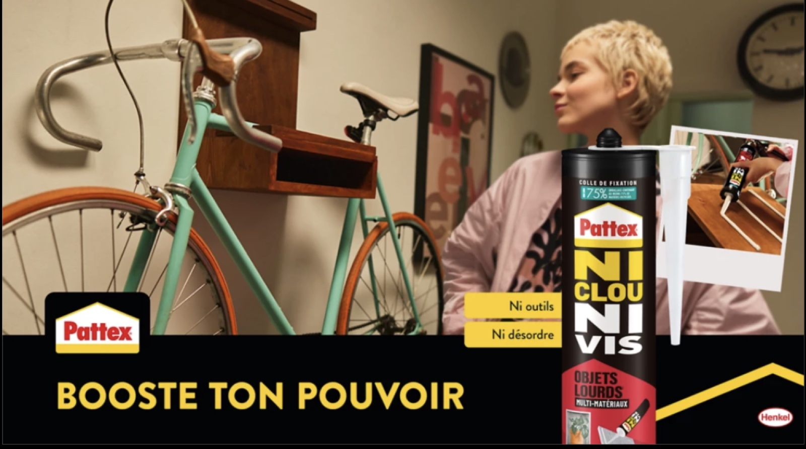

SHRUTHI
SANKARANARAYANAN
Brand Marketing & Strategy
"Building and growing brands that people connect with."
About
Having completed my MSc in International Business at WHU, I've spent the last year at Henkel helping to bring the Pattex brand to life across global markets, from building insight-led brand reviews to shaping creative assets for product relaunches.
My background in counseling psychology shapes how I approach brand work. Whether I'm mapping consumer profiles, crafting a campaign narrative, or coaching a sales team, I'm always asking the same question: what's really driving people underneath the surface? That lens helps me build brands that connect on a human level, not just a transactional one.
Outside of work, I'm a devoted fiction reader with a soft spot for fantasy. Years of getting lost in richly built worlds have made me a natural storyteller, something I bring into every brand and campaign I work on.
-
Campaign & Toolkit
Pattex No More Nails Relaunch
Developed an interactive innovation page to highlight the key benefits and use cases of the No More Nails range.

View Live Innovation Page (FR) -
Brand Strategy POV
LEGO: The Messy Middle
A speculative brand strategy POV for LEGO. As the industry races to automate creativity, LEGO has the chance to do the opposite: champion the messy middle, the human room to try, fail, and make something that's truly yours.
-
Master's Thesis · WHU
The Human Line: Where brand teams should and shouldn't let AI in
Examines how brand-led organizations are actually using generative AI in strategy execution. Twelve interviews across brand, digital, and strategy functions, distilled into a clear view of where AI belongs, where it doesn't, and what brand teams should do next.
-
Campaign Concept
Uniqlo: The Bold Basic
A speculative campaign concept for Uniqlo. As fast fashion floods feeds with novelty, Uniqlo has the chance to flip the status game: repetition isn't the limitation, it's the skill. The Bold Basic celebrates the quiet mastery of styling what you already own.